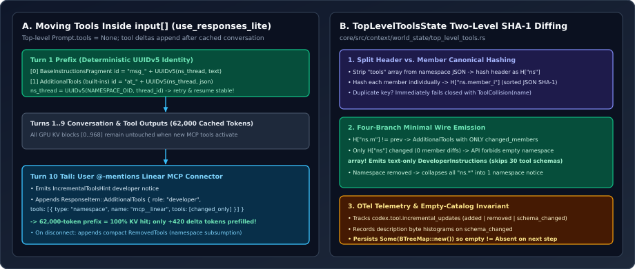

Incremental Tool Schemas in History: TopLevelToolsState, UUIDv5 Items & SHA-1 Tool Hashing
Lazy tool discovery has a dirty secret in most agent frameworks: the moment your router hydrates a new MCP server schema at Turn 10, inserting that tool into the top-level tools: [...] API parameter invalidates the entire $60{,}000$-token KV cache! Here is how OpenAI Codex’s Responses Lite path (top_level_tools.rs + client.rs) moves tool declarations inside the append-only input stream with deterministic UUIDv5 item IDs and two-level SHA-1 namespace diffing.
1. The Lazy Tool Discovery vs. KV-Cache Paradox
Suppose an agent starts a session with $12$ built-in tools, works through $10$ turns ($L = 62{,}000$ tokens), and then the user types @linear file a bug for this race condition—activating $18$ MCP tools from the Linear connector. In a standard Chat Completions or Responses API request, serialized tool definitions sit at token index $0$, ahead of every system, user, and assistant message:
That creates an ugly dilemma:
- Eagerly load every MCP server on Turn 1: Pay a permanent $15{,}000\text{–}35{,}000$-token schema tax on every session (even trivial 2-turn bash questions) and degrade tool-selection accuracy via schema crowding.
- Lazily hydrate tools into top-level
toolson Turn 10: Mutate $\mathcal{T}_{\text{tools}}$ at index $0$, busting the GPU prefix cache for all $62{,}000$ tokens of $m_1 \dots m_k$!

use_responses_lite, top-level Prompt.tools is empty; tool schemas live inside input[] as ResponseItem::AdditionalTools with thread-scoped UUIDv5 IDs so mid-session MCP activation appends at the tail. Right: TopLevelToolsState hashes namespace headers separately from member schemas to minimize wire bytes.2. Deterministic UUIDv5 Identities in client.rs
When model_info.use_responses_lite (incremental tools) is active, Session::build_prompt leaves top-level Prompt.tools empty, and ModelClientSession (codex-rs/core/src/client.rs, lines 1054–1085) injects prompt-level declarations directly into the input item vector using deterministic RFC 4122 UUIDv5 hashes:
// These prompt-only items are rebuilt on every request. Hash their visible payloads
// within the thread so retries and resumed sessions preserve their identity.
let prefix_namespace = Uuid::new_v5(
&Uuid::NAMESPACE_OID,
self.state.thread_id.to_string().as_bytes(),
);
let mut prefix = Vec::new();
let tools = if model_info.use_responses_lite {
if !prompt.tools.is_empty() {
let tools = create_tools_json_for_responses_lite(&prompt.tools)?;
prefix.push(ResponseItem::AdditionalTools {
id: Some(ResponseItemId::with_suffix(
"at",
Uuid::new_v5(&prefix_namespace, &serde_json::to_vec(&tools)?),
)),
role: "developer".to_string(),
tools: Arc::from(tools),
});
}
None
} else {
Some(create_tools_raw_json_for_responses_api(&prompt.tools)?.into())
};
if !prompt.base_instructions.text.is_empty() {
let mut instructions = ContextualUserFragment::into(BaseInstructionsFragment(
prompt.base_instructions.text.clone(),
));
instructions.set_id(Some(ResponseItemId::with_suffix(
"msg",
Uuid::new_v5(&prefix_namespace, prompt.base_instructions.text.as_bytes()),
)));
prefix.push(instructions);
}
input.splice(0..0, prefix);Why use a two-step UUIDv5 hierarchy $\operatorname{UUIDv5}(\operatorname{UUIDv5}(\texttt{OID}, \text{thread\_id}), \text{payload})$ instead of Uuid::new_v4()?
- Retry & Resume Idempotency: If a WebSocket drops mid-turn and Codex reconnects or falls back to HTTP, rebuilding those prefix items with random UUIDv4s would break strict item-by-item equality in
prepare_websocket_request(which verifiescurrent.inputextendsprevious_request.input!). - Cross-Thread Isolation: Scoping
prefix_namespacetothread_idensures item IDs are globally unique per thread in backend storage while remaining $100\%$ deterministic within the thread. - Window Mode Pinning: Look at
Session::current_window_uses_incremental_toolsinsession/world_state.rs(lines 51–56): once a context window starts with in-history tool declarations (state.history.has_tool_declarations()), Codex pins that mode for the remainder of the window even if feature flags toggle mid-session, switching modes only on a fresh compaction window (new_window == true).
3. Two-Level Namespace & Member Hashing in TopLevelToolsState
In Responses Lite, tools are organized into one-level namespaces (for example, functions, mcp__github, or mcp__linear), where each namespace object carries its own description header plus a "tools": [...] array of member schemas. In core/src/context/world_state/top_level_tools.rs (lines 48–81), TopLevelToolsState::new decomposes every namespace into $1 + |M|$ independent canonical JSON SHA-1 hashes:
pub(crate) fn new(
messages: ResolvedIncrementalToolMessages,
definitions: Vec<Value>,
metrics: Option<Arc<dyn ExtensionMetrics>>,
) -> Result<Self> {
let mut hashes = BTreeMap::new();
let mut insert_hash = |name: String, definition: &Value| -> Result<()> {
let hash = WorldStateHash::from_json(definition);
if hashes.insert(name.clone(), hash).is_some() {
return Err(CodexErrorDetails::ToolCollision(name).into());
}
Ok(())
};
for definition in &definitions {
let name = definition_name(definition);
let mut header = definition.clone();
if let Some(tools) = header
.as_object_mut()
.expect("serialized tool object")
.remove("tools")
{
for tool in tools.as_array().expect("serialized namespace members") {
insert_hash(format!("{name}.{}", definition_name(tool)), tool)?;
}
}
insert_hash(name.to_string(), &header)?;
}
Ok(Self { messages, definitions, hashes, metrics })
}Notice what stripping .remove("tools") before hashing header unlocks inside render_diff (lines 134–264):
| Catalog Mutation | Hash Condition | Tail Items Appended to input |
|---|---|---|
| 1. New or updated tool(s) in namespace | $\exists\, m:\; H_t[\texttt{ns.m}] \ne H_{t-1}[\texttt{ns.m}]$ | IncrementalToolsHint + ResponseItem::AdditionalTools containing only changed_members inside ns. |
| 2. Namespace description changed, 0 member schemas changed | $H_t[\texttt{ns}] \ne H_{t-1}[\texttt{ns}]$ and $\forall m:\; H_t[\texttt{ns.m}] = H_{t-1}[\texttt{ns.m}]$ | Plain-text DeveloperInstructions tagged with ContentItemMetadata::tool(ns)—avoiding an illegal empty tools: [] namespace declaration and avoiding re-sending 30 unchanged schemas! |
| 3. Entire namespace disconnected | $\texttt{ns} \in H_{t-1} \setminus H_t$ | A single standalone RemovedTools fragment naming ns; individual ns.* member names are suppressed on the wire via namespace subsumption while still counted in OTel metrics. |
| 4. All tools removed (empty catalog) | $H_t = \varnothing$ | Persists Some(BTreeMap::new()) (not None!) so step $t+1$ knows the catalog is known empty rather than missing state. |
4. Preserving Parent Tool Declarations on Subagent Forks
Check one more subtle optimization at lines 175–178 of core/src/session/world_state.rs:
let preserve_parent_tool_declarations =
!new_window && self.preserve_parent_tool_declarations();
if incremental_tools && !preserve_parent_tool_declarations {
let specs = step_context.tool_router.model_visible_specs();
...
}When Codex spawns an internal sub-session that shares a forked prefix with its parent thread (such as a synchronous Guardian safety review or a forked subagent), re-running TopLevelToolsState with the child’s restricted tool router would immediately append a noisy RemovedTools delta or invalidate shared prefix assumptions. Setting preserve_parent_tool_declarations skips TopLevelToolsState on the inherited window while enforcing capability restrictions at the runtime tool-execution layer instead—letting the child reuse $100\%$ of the parent’s hot GPU KV cache!
5. Questions worth answering
.) in Responses Lite?Look at lines 222–248 of top_level_tools.rs: TopLevelToolsState stores both namespace header hashes ("mcp__linear") and member hashes ("mcp__linear.create_issue") in a single flat BTreeMap<String, WorldStateHash>. Forbidding dots in raw identifiers makes key.split_once('.') an unambiguous bijection between a member key and its parent namespace without needing nested snapshot structs in rollout logs.
description.len() specifically when action == "schema_changed"?Some third-party MCP servers dynamically embed live timestamps, workspace item counts, or changing status strings inside tool description fields! Whenever an MCP server mutates its own tool description between turns, TopLevelToolsState must re-emit that schema at the tail. Recording TOOL_SPEC_DESCRIPTION_BYTES_METRIC per tool tag immediately exposes misbehaving MCP servers causing description churn in production telemetry.